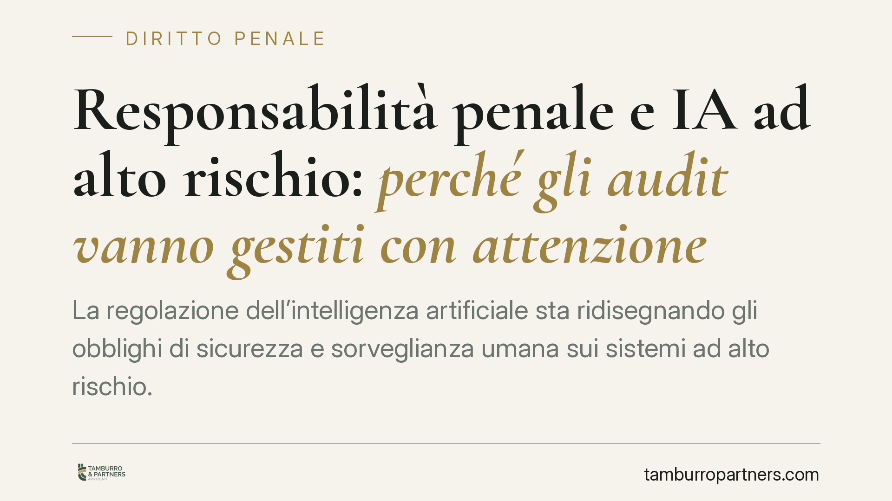

Responsabilità penale e IA ad alto rischio: perché gli audit vanno gestiti con attenzione
La regolazione dell'intelligenza artificiale sta ridisegnando gli obblighi di sicurezza e sorveglianza umana sui sistemi ad alto rischio. Cresce l'attenzione sul rischio penale d'impresa e su un paradosso concreto: gli audit interni, pensati per proteggere l'organizzazione, possono trasformarsi in prova a carico se non accompagnati da interventi correttivi documentati. Vediamo lo stato del quadro normativo e le cautele utili.

Il contesto: dall'AI Act agli obblighi interni
Il riferimento europeo è il Regolamento (UE) 2024/1689, noto come AI Act. Il testo classifica i sistemi di intelligenza artificiale per livello di rischio e dedica una disciplina specifica ai sistemi ad alto rischio, elencati nell'Allegato III (tra cui, ad esempio, applicazioni in ambito occupazionale, selezione del personale e gestione dei lavoratori).
Per questi sistemi il Regolamento impone obblighi puntuali: gestione del rischio, qualità dei dati, documentazione tecnica, tracciabilità e — punto centrale per il tema penale — sorveglianza umana effettiva (human oversight). Le tempistiche di applicazione sono scaglionate e vanno verificate volta per volta rispetto alla categoria di sistema.
Sul piano interno, l'Italia si è dotata di una legge quadro in materia di intelligenza artificiale (Legge 23 settembre 2025, n. 132), che detta principi e deleghe. È bene chiarire un punto: alla data di redazione di questo contributo non risulta vigente una nuova, autonoma fattispecie penale del codice penale dedicata specificamente all'omessa sicurezza dei sistemi di IA. Alcune ipotesi circolate in dottrina e nel dibattito pubblico — come l'introduzione di un reato ad hoc o l'ampliamento dei reati presupposto della responsabilità degli enti — vanno considerate, allo stato, come prospettive de iure condendo e non come diritto vigente. Chi opera deve distinguere con nettezza ciò che è legge da ciò che è ancora ipotesi legislativa.
Perché il rischio penale esiste comunque
Anche senza una norma nuova e dedicata, l'uso di sistemi di IA ad alto rischio si innesta su fattispecie già presenti nell'ordinamento. Sul versante penale rilevano, a seconda dei casi, i reati colposi legati alla violazione di regole cautelari e, in ambito lavoristico, gli obblighi in materia di sicurezza (D.lgs. 81/2008).
Qui si colloca il paradosso probatorio dell'audit. L'attività di verifica interna produce documenti: report, valutazioni di rischio, segnalazioni di anomalie. Se un audit rileva una criticità e l'organizzazione non interviene, quel documento cessa di essere uno scudo e diventa la prova della consapevolezza pregressa del rischio. In sede giudiziaria, un difetto noto e non corretto pesa più di un difetto ignoto.
In altri termini: l'audit non protegge di per sé. Protegge il ciclo completo audit → decisione → intervento → verifica dell'efficacia. Un audit senza remediation documentata può aggravare la posizione di dirigenti ed enti anziché tutelarli.
Il fronte giuslavoristico
Quando il sistema di IA incide sull'organizzazione del lavoro — turni, valutazioni, sicurezza degli impianti — entra in gioco l'apparato prevenzionistico. Il datore di lavoro resta il garante della sicurezza e la delega di funzioni (art. 16 D.lgs. 81/2008) non trasferisce la responsabilità in modo automatico: richiede requisiti di forma, autonomia e vigilanza.
Affidare a un sistema automatizzato decisioni che incidono sulla salute o sui diritti dei lavoratori non esonera dal dovere di controllo. La sorveglianza umana prevista dall'AI Act e gli obblighi di vigilanza del datore convergono: entrambi richiedono che una persona competente possa comprendere, monitorare e, se necessario, sospendere l'output del sistema.
Implicazioni pratiche per l'impresa
Per l'impresa che adotta o distribuisce sistemi ad alto rischio, il messaggio è duplice. Da un lato, l'attività di verifica è necessaria e, in prospettiva, sempre più richiesta. Dall'altro, va gestita in modo che ogni criticità emersa sia seguita da una risposta tracciabile. Un sistema di controllo che rileva senza correggere è, sul piano probatorio, il peggior scenario possibile.
Cosa fare in concreto
- Mappa i sistemi di IA in uso e verifica quali rientrano tra quelli ad alto rischio secondo l'Allegato III del Regolamento (UE) 2024/1689.
- Aggiorna il Modello 231, dove adottato, integrando i processi decisionali assistiti da IA nella valutazione dei rischi-reato, senza attribuire alla normativa più di ciò che oggi prevede.
- Struttura un flusso di remediation documentato: ogni criticità rilevata deve avere una decisione datata, un intervento e una verifica di efficacia.
- Rendi verificabile la sorveglianza umana: individua chi può monitorare e sospendere il sistema, con competenze e poteri reali, non solo formali.
- Cura le deleghe di funzioni in coerenza con l'art. 16 D.lgs. 81/2008, verificando autonomia decisionale e obbligo di vigilanza residua.
Consigliamo di trattare gli audit come parte di un processo, non come adempimento isolato, e di verificare periodicamente l'evoluzione del quadro normativo, che è in rapido movimento.
---
Contributo informativo a cura di Tamburro & Partners - Avv. Giuseppe Tamburro. Non costituisce parere legale.
Ogni condominio ha una storia a sé.
Se gestisci un'amministrazione e vuoi un confronto su una specifica questione condominiale, scrivi allo studio. Ti rispondiamo entro un giorno lavorativo.